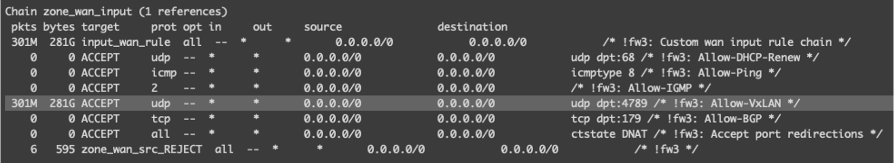

# L2 interface set xe-0/0/0 unit 0 family ethernet-switching interface-mode access set xe-0/0/0 unit 0 family ethernet-switching vlan members vlan-vxlan10
# connect L2 switch set xe-0/0/37 unit 0 family ethernet-switching interface-mode trunk set xe-0/0/37 unit 0 family ethernet-switching vlan members vlan81
# vtep source interface set irb unit 81 family inet address 11.81.1.1/24 set lo0 unit 0 family inet address 11.1.1.1/32
vlan-vxlan10 is vxlan vlan
2.1.2 protocol config
1 2 3 4 5 6 7 8 9 10 11
set routing-options router-id 11.1.1.1 set routing-options autonomous-system 65000 set protocols bgp group evpn type internal set protocols bgp group evpn local-address 11.1.1.1 set protocols bgp group evpn family evpn signaling set protocols bgp group evpn allow 11.81.1.0/24 set protocols bgp group evpn allow 11.82.1.0/24 set protocols evpn encapsulation vxlan set protocols evpn vni-options vni 10 vrf-target target:65000:10 set protocols evpn extended-vni-list 10
2.1.3 switch and vlan config
1 2 3 4 5 6 7 8 9
set switch-options vtep-source-interface lo0.0 set switch-options route-distinguisher 11.1.1.1:10 set switch-options vrf-target target:65000:10 set vlans vlan-vxlan10 vlan-id 10 set vlans vlan-vxlan10 vxlan vni 10 set vlans vlan-vxlan10 vxlan ingress-node-replication set vlans vlan81 description "openwrt test" set vlans vlan81 vlan-id 81 set vlans vlan81 l3-interface irb.81
ip link del vxlan1 ip link add vxlan1 type vxlan id 10 local${WAN_IP} dstport 4789 ip link set vxlan1 master br-lan ip link set vxlan1 up
}
2.2.3 firewall config
The OpenWRT default firewall is disable the VxLAN traffic. so we need add the firewall rule. JUNOS will use 4789 to connect the VxLAN.
1 2 3 4 5 6 7
# … in the /etc/config/firewall config rule option name Allow-VxLAN option src wan option dest_port 4789 option proto udp option target ACCEPT
if we need another BGP speaker to connect active. we need to add the BGP 179(TCP) port in the firewall rule. In my use case, the JUNOS BGP speaker is passive mode.
1 2 3 4 5 6 7 8
# … in the /etc/config/firewall config rule option name Allow-BGP option src wan option dest_port 179 option proto tcp option target ACCEPT

3. vxlan evpn status
3.1 QFX5100
3.1.1 BGP (control plane)
BGP peer is evpn.
1 2 3 4 5 6 7 8 9 10 11 12
lab@qfx5100-48s-6q> show bgp summary Threading mode: BGP I/O Groups: 1 Peers: 1 Down peers: 0 Unconfigured peers: 1 Table Tot Paths Act Paths Suppressed History Damp State Pending bgp.evpn.0 2 2 0 0 0 0 Peer AS InPkt OutPkt OutQ Flaps Last Up/Dwn State|#Active/Received/Accepted/Damped... 11.81.1.2 65000 80 70 0 0 28:40 Establ __default_evpn__.evpn.0: 0/0/0/0 bgp.evpn.0: 2/2/2/0 default-switch.evpn.0: 2/2/2/0
bgp.evpn.0: 6 destinations, 6 routes (6 active, 0 holddown, 0 hidden) + = Active Route, - = Last Active, * = Both
2:11.1.1.1:10::10::e4:43:4b:f6:c5:56/304 MAC/IP *[EVPN/170] 00:39:07 Indirect 2:11.81.1.2:2::0::e4:43:4b:f6:c5:75/304 MAC/IP *[BGP/170] 00:45:24, localpref 100 AS path: I, validation-state: unverified > to 11.81.1.2 via irb.81 2:11.1.1.1:10::10::e4:43:4b:f6:c5:56::192.168.8.100/304 MAC/IP *[EVPN/170] 00:19:13 Indirect 2:11.81.1.2:2::0::e4:43:4b:f6:c5:75::192.168.8.10/304 MAC/IP *[BGP/170] 00:00:19, localpref 100 AS path: I, validation-state: unverified > to 11.81.1.2 via irb.81 3:11.1.1.1:10::10::11.1.1.1/248 IM *[EVPN/170] 00:46:26 Indirect 3:11.81.1.2:2::0::11.81.1.2/248 IM *[BGP/170] 00:45:24, localpref 100 AS path: I, validation-state: unverified > to 11.81.1.2 via irb.81
lab@qfx5100-48s-6q> show route table bgp.evpn.0 extensive evpn-mac-address e4:43:4b:f6:c5:75
bgp.evpn.0: 5 destinations, 5 routes (5 active, 0 holddown, 0 hidden) 2:11.81.1.2:2::0::e4:43:4b:f6:c5:75/304 MAC/IP (1 entry, 0 announced) *BGP Preference: 170/-101 Route Distinguisher: 11.81.1.2:2 Next hop type: Indirect, Next hop index: 0 Address: 0xccd60b0 Next-hop reference count: 4 Source: 11.81.1.2 Protocol next hop: 11.81.1.2 Indirect next hop: 0x2 no-forward INH Session ID: 0x0 State: <Active Int Ext> Local AS: 65000 Peer AS: 65000 Age: 17:50:15 Metric2: 0 Validation State: unverified Task: BGP_65000.11.81.1.2+43211 AS path: I Communities: target:65000:10 encapsulation:vxlan(0x8) Import Accepted Route Label: 10 ESI: 00:00:00:00:00:00:00:00:00:00 Localpref: 100 Router ID: 11.81.1.2 Secondary Tables: default-switch.evpn.0 Indirect next hops: 1 Protocol next hop: 11.81.1.2 Indirect next hop: 0x2 no-forward INH Session ID: 0x0 Indirect path forwarding next hops: 1 Next hop type: Router Next hop: 11.81.1.2 via irb.81 Session Id: 0x0 11.81.1.0/24 Originating RIB: inet.0 Node path count: 1 Forwarding nexthops: 1 Next hop type: Interface Nexthop: via irb.81
3.1.2 forwarding plane
mac-ip table
1 2 3 4 5 6 7 8 9 10 11 12 13
{master:0} lab@qfx5100-48s-6q> show ethernet-switching mac-ip-table
MAC IP flags (S - Static, D - Dynamic, L - Local , R - Remote, Lp - Local Proxy, Rp - Remote Proxy, K - Kernel, RT - Dest Route, AD - Advt to remote, RE - Re-ARP/ND, RO - Router, OV - Override) Routing instance : default-switch Bridging domain : vlan-vxlan10 IP MAC Flags Logical Active address address Interface source 192.168.8.100 e4:43:4b:f6:c5:56 DL,K,AD xe-0/0/0.0 192.168.8.10 e4:43:4b:f6:c5:75 DR,K vtep.32769 11.81.1.2
MAC table:
1 2 3 4 5 6 7 8 9 10 11 12 13 14 15 16
{master:0} lab@qfx5100-48s-6q> show ethernet-switching table
MAC flags (S - static MAC, D - dynamic MAC, L - locally learned, P - Persistent static SE - statistics enabled, NM - non configured MAC, R - remote PE MAC, O - ovsdb MAC)
Ethernet switching table : 3 entries, 3 learned Routing instance : default-switch Vlan MAC MAC Logical Active name address flags interface source vlan-vxlan10 e4:43:4b:f6:c5:56 D xe-0/0/0.0 vlan-vxlan10 e4:43:4b:f6:c5:75 D vtep.32769 11.81.1.2 vlan81 94:83:c4:16:51:44 D xe-0/0/37.0
# frr command OpenWrt# show bgp l2vpn evpn summ BGP router identifier 11.81.1.2, local AS number 65000 vrf-id 0 BGP table version 0 RIB entries 3, using 384 bytes of memory Peers 1, using 10896 bytes of memory Peer groups 1, using 32 bytes of memory
# frr command OpenWrt# show bgp l2vpn evpn BGP table version is 15, local router ID is 11.81.1.2 Status codes: s suppressed, d damped, h history, * valid, > best, i - internal Origin codes: i - IGP, e - EGP, ? - incomplete EVPN type-1 prefix: [1]:[ESI]:[EthTag]:[IPlen]:[VTEP-IP] EVPN type-2 prefix: [2]:[EthTag]:[MAClen]:[MAC]:[IPlen]:[IP] EVPN type-3 prefix: [3]:[EthTag]:[IPlen]:[OrigIP] EVPN type-4 prefix: [4]:[ESI]:[IPlen]:[OrigIP] EVPN type-5 prefix: [5]:[EthTag]:[IPlen]:[IP]
Network Next Hop Metric LocPrf Weight Path Route Distinguisher: 11.1.1.1:10 *>i[2]:[10]:[48]:[e4:43:4b:f6:c5:56] 11.1.1.1 100 0 i RT:65000:10 ET:8 *>i[2]:[10]:[48]:[e4:43:4b:f6:c5:56]:[32]:[192.168.8.100] 11.1.1.1 100 0 i RT:65000:10 ET:8 *>i[3]:[10]:[32]:[11.1.1.1] 11.1.1.1 100 0 i RT:65000:10 ET:8 Route Distinguisher: 11.81.1.2:2 *> [2]:[0]:[48]:[e4:43:4b:f6:c5:75] 11.81.1.2 32768 i ET:8 RT:65000:10 *> [2]:[0]:[48]:[e4:43:4b:f6:c5:75]:[32]:[192.168.8.10] 11.81.1.2 32768 i ET:8 RT:65000:10 *> [3]:[0]:[32]:[11.81.1.2] 11.81.1.2 32768 i ET:8 RT:65000:10
Displayed 6 out of 6 total prefixes
evpn BGP advertised-routes
1 2 3 4 5 6 7 8 9 10 11 12 13 14 15 16 17 18
# frr command OpenWrt# show bgp l2vpn evpn neighbors 11.1.1.1 advertised-routes BGP table version is 0, local router ID is 11.81.1.2 Default local pref 100, local AS 65000 Status codes: s suppressed, d damped, h history, * valid, > best, i - internal Origin codes: i - IGP, e - EGP, ? - incomplete
Network Next Hop Metric LocPrf Weight Path Route Distinguisher: 11.81.1.2:2 *> [2]:[0]:[48]:[e4:43:4b:f6:c5:75] 100 32768 i *> [2]:[0]:[48]:[e4:43:4b:f6:c5:75]:[32]:[192.168.8.10] 100 32768 i *> [3]:[0]:[32]:[11.81.1.2] 100 32768 i
Total number of prefixes 3
3.2.2 Linux forwarding plane
bridge fdb
1 2 3 4 5 6 7 8 9 10 11 12 13 14 15 16 17
# linux command root@OpenWrt:~# bridge fdb | grep -E 'vxlan|wan|lan1' e4:43:4b:f6:c5:75 dev lan1 master br-lan 94:83:c4:16:51:45 dev lan1 vlan 1 master br-lan permanent 94:83:c4:16:51:45 dev lan1 master br-lan permanent e4:43:4b:f6:c5:75 dev lan1 vlan 1 self c0:42:d0:08:9a:80 dev wan vlan 1 self 1c:9c:8c:67:c3:44 dev wan vlan 1 self 1c:9c:8c:68:e4:c0 dev wan vlan 1 self e4:43:4b:f6:c5:56 dev vxlan1 vlan 1 extern_learn master br-lan e4:43:4b:f6:c5:56 dev vxlan1 extern_learn master br-lan 3e:dd:f3:a4:65:2b dev vxlan1 vlan 1 master br-lan permanent 3e:dd:f3:a4:65:2b dev vxlan1 master br-lan permanent 00:00:00:00:00:00 dev vxlan1 dst 11.1.1.1 self permanent e4:43:4b:f6:c5:56 dev vxlan1 dst 11.1.1.1 self extern_learn 33:33:00:00:00:01 dev wlan1 self permanent 33:33:00:00:00:02 dev wlan1 self permanent
00:00:00:00:00:00 dev vxlan1 dst 11.1.1.1 self permanent. is add by /lib/netifd/proto/vxlan.sh
vxlan interface:
1 2 3 4 5
root@OpenWrt:~# ip -d link show vxlan1 8: vxlan1: <BROADCAST,MULTICAST,UP,LOWER_UP> mtu 1500 qdisc noqueue master br-lan state UNKNOWN mode DEFAULT group default qlen 1000 link/ether 3e:dd:f3:a4:65:2b brd ff:ff:ff:ff:ff:ff promiscuity 1 minmtu 68 maxmtu 65535 vxlan id 10 local 11.81.1.2 srcport 0 0 dstport 4789 ttl auto ageing 300 udpcsum noudp6zerocsumtx noudp6zerocsumrx bridge_slave state forwarding priority 32 cost 100 hairpin off guard off root_block off fastleave off learning on flood on port_id 0x8003 port_no 0x3 designated_port 32771 designated_cost 0 designated_bridge 7fff.94:83:C4:16:51:45 designated_root 7fff.94:83:C4:16:51:45 hold_timer 0.00 message_age_timer 0.00 forward_delay_timer 0.00 topology_change_ack 0 config_pending 0 proxy_arp off proxy_arp_wifi off mcast_router 1 mcast_fast_leave off mcast_flood on mcast_to_unicast off neigh_suppress off group_fwd_mask 0 group_fwd_mask_str 0x0 vlan_tunnel off isolated off addrgenmode eui64 numtxqueues 1 numrxqueues 1 gso_max_size 65536 gso_max_segs 65535
linux bridge:
1 2 3 4 5
root@OpenWrt:~# brctl show bridge name bridge id STP enabled interfaces br-lan 7fff.9483c4165145 no lan2 vxlan1 lan1